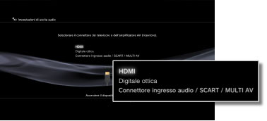
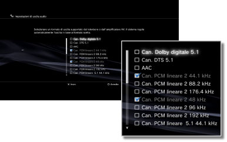

Impostazioni > Impostazioni dell'audio > Impostazioni di uscita audio
Impostazioni di uscita audio
È possibile regolare le impostazioni di uscita audio del sistema. Queste impostazioni vengono utilizzate principalmente quando il sistema è collegato a dispositivi audio che supportano l'uscita audio digitale, come amplificatori AV (ricevitori) per sistemi di home entertainment.
1. |
Confermare i formati supportati dal dispositivo audio. |
||||||||||||
|---|---|---|---|---|---|---|---|---|---|---|---|---|---|
2. |
Selezionare |
||||||||||||
3. |
Selezionare [Impostazioni di uscita audio]. |
||||||||||||
4. |
Selezionare il connettore di ingresso sul dispositivo audio. I numeri dei canali e i formati audio che sono supportati variano in base al connettore utilizzato. 
|
||||||||||||
5. |
Selezionare i formati di uscita audio.  |
||||||||||||
6. |
Controllare le impostazioni. |
||||||||||||
7. |
Salvare le impostazioni. |
 è possibile tornare alla schermata precedente e rivedere le impostazioni.
è possibile tornare alla schermata precedente e rivedere le impostazioni.Note
- L'audio [Can. PCM lineare 2] è impostato per essere emesso da tutti i connettori di uscita per impostazione predefinita. Se le impostazioni di uscita audio vengono modificate, l'audio verrà emesso solo dai connettori impostati.
- Se le impostazioni di uscita audio vengono modificate, il sistema non sarà più in grado di emettere audio contemporaneamente dai connettori multipli di uscita. Ad esempio, se il sistema è collegato a un televisore tramite un cavo HDMI e ad un dispositivo audio tramite un cavo ottico digitale e si passa a [Digitale ottica] sotto [Impostazioni di uscita audio], l'audio non verrà più emesso dal televisore. Per emettere audio dal televisore, spostare l'impostazione su [HDMI] oppure selezionare
 (Impostazioni) >
(Impostazioni) >  (Impostazioni dell'audio) > [Uscita audio multipla] e impostare l'opzione su [Attiva].
(Impostazioni dell'audio) > [Uscita audio multipla] e impostare l'opzione su [Attiva]. - Se al punto 5 si seleziona [Can. PCM lineare 2 88,2 kHz] o [Can. PCM lineare 2 176,4 kHz], in alcuni dispositivi l'audio potrebbe essere intermittente o non essere emesso affatto.
- Quando si utilizza un cavo HDMI, solo l'audio [Can. PCM lineare 2] verrà emesso dal software in formato PlayStation®2 e PlayStation®. Per impostare l'audio Dolby Digital o DTS®, occorre collegare il sistema PS3™ e il dispositivo audio tramite un cavo digitale ottico e passare a [Digitale ottica] in [Impostazioni di uscita audio].
- Se un dispositivo che non è compatibile con lo standard HDCP (High-bandwidth Digital Content Protection) viene collegato al sistema utilizzando un cavo HDMI, non è possibile emettere video e/o audio dal sistema.
- Se è selezionato Dolby TrueHD come formato di uscita audio, l'audio verrà emesso in Dolby Digital durante la riproduzione di contenuto Blu-ray 3D™.
Avvisi
- Alcuni titoli di software in formato PlayStation®2 o PlayStation® possono essere eseguiti in modo differente sul sistema PS3™ rispetto all'esecuzione sui sistemi PlayStation®2 o PlayStation®, oppure non vengono eseguiti correttamente sul sistema PS3™.
- Inoltre, i dischi in formato PlayStation®2 non sono riproducibili su alcuni sistemi PS3™. Per i dettagli, vedere [Tipi di dischi riproducibili], visitare il sito Web di SIE per la propria zona o rivedere la documentazione inclusa con il sistema PS3™.